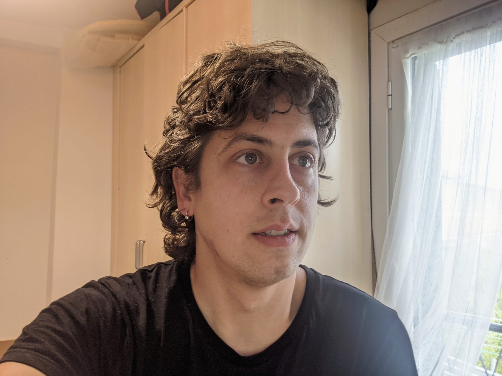
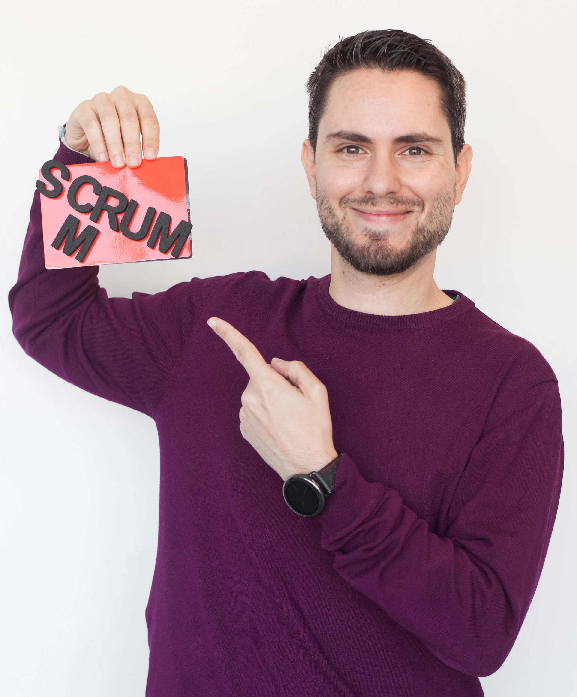
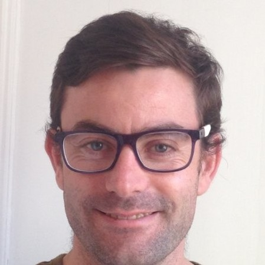

Equipo - Teach[Tech]
Los que estamos detrás de todo esto.

Teach[Tech] es una iniciativa sin ánimo de lucro formada por profesionales de diferentes ámbitos totalmente voluntarios. En esta página puedes conocer a esos profesionales.
JM

- Roles: Mentor/Instructor
- Primer programa: Mostrar por pantalla los números del 1 al 10.
- Hobbies: Aprender (autodidacta) y enseñar. Juegos de rol y mundos de fantasía. Tocar la guitarra. Cocinar (y comerme lo que cocino).
- Frase destacada: “No tengas prisa, pero nunca te pares.”
Adrián

- Roles: Mentor/Instructor
- Primer programa: Hola mundo en C.
- Hobbies: Deporte (Triatlón). Naturaleza (Alpinismo, escalada). Lectura. Música. Viajes.
- Frase destacada: "Cuéntame algo y lo olvidaré. Enséñamelo y lo recordaré. Involúcrame y lo entenderé."
Luis

- Rol: Mentor/Instructor
- Primer programa: Hello World en PHP.
- Hobbies: Ciclismo. Ciberseguridad. Visitar parajes naturales.
- Frase destacada: "La función de un buen software es hacer que lo complejo aparente ser simple" Grady Booch.
Juanlu

- Rol: Mentor
- Primer programa: Sumar y Restar números
- Hobbies: Videojuegos. Baloncesto. Todo lo que tenga motor y como mínimo rueda.
- Frase destacada: "Nadie conoce un lenguaje de cabeza, no te vengas abajo y usa el buscador (siempre con cabeza)"
Nadine

- Rol: Mentora
- Primer programa: Una carta de restaurante en Visual Basic para cobrarle a mis padres los cafés que me pedían al día.
- Hobbies: Juegos de mesa (modernos). Grabar vídeos de youtube/podcast. Yoga. Senderismo.
- Frase destacada: "La paciencia es la madre de todas las ciencias"
Dani

- Rol: Mentor/Instructor
- Primer programa: a los 7 años un programa en Commodore64 que imprimía "COMMODORE64" infinitamente
- Hobbies: Tocar el teclado en bandas de rock. Ciencia ficción. NBA.
- Frase destacada: "It's the user, stupid!"
Teffa

- Rol: Mentora/Instructora
- Primer programa: agenda telefónica que se imprimía por pantalla
- Hobbies: Pilates. Videojuegos. Maratón de sries. Lectura de fantasía o ciencia ficción.
- Frase destacada: "Tengo muchos Teffa dixit pero nunca me acuerdo de ellos. De todas formas, en caso de duda, StackOverflow"
Rodrigo

- Rol: Instructor
- Primer programa: editor de sonidos para el Korg N364 (5 años antes)
- Hobbies: Música (toco el teclado en un grupo de metal). Deporte (practicarlo). Juegos de rol.
- Frase destacada: "Digo muchas, pero no recuerdo ninguna. Además, probablemente no fuera mía"
Juan

- Rol: Mentor/Instructor
- Primer programa: Interfaz gráfico para la utilidad de Windows Net Send.
- Hobbies: Ciclismo. Trail running & Marathon. Tecnología
- Frase destacada: "Esto es una maratón, dividida en sprints"
Nacho

- Rol: Instructor
- Primer programa: Calcular el área de un círculo
- Hobbies: Deporte (natación, remo y lo que surja). Lenguajes (en este caso no de programación). Perros.
- Frase destacada: "El no ya lo tienes"
Diego

- Rol: Mentor/Instructor
- Hobbies: Juegos de rol, wargames, videojuegos.
- Frase destacada: “Beethoven era un buen compositor porque utilizaba ideas nuevas en combinación con ideas antiguas. Nadie, ni siquiera Beethoven podría inventar la música desde cero. Es igual con la informática”
Alejandro

- Rol: Mentor/Instructor
- Primer programa: Una aplicación para organizar archivos de películas y subtítulos en Haskell.
- Hobbies: Juegos de mesa. CrossFit. Bricolaje.
- Frase destacada: “Escucha al compilador, el compilador es tu amigo”
Jorge Ferrer

- Rol:Instructor
- Primer programa: Modificar el juego Gorillas que venía en MS Dos, para cambiar las reglas de gravedad para mi gorila y ganar a mi primo 0=)
- Hobbies: Practicar deportes (especialmente tenis), rutas por la naturaleza, todo lo relacionado con tecnología y espacio, aprender cosas nuevas y enseñarlas.
- Frase destacada: “A los ignorantes les aventajan los que leen libros. A estos, los que retienen lo leído. A estos, los que comprenden lo leído. A estos, los que se ponen manos a la obra.” Proverbio Hindú.
Manu

- Rol: Mentor
- Primer programa: Jugueteé con calculadoras programables de adolescente, pero el primer programa serio fue el "hundir la flota" en la carrera.
- Hobbies: Programar. Juegos de rol y mundos de fantasía en todos sus formatos (juegos, series, películas, libros).
- Frase destacada: “Es muy fácil: el ordenador no te insulta ni te va a morder, simplemente hace lo que tú le dices.”
Joaquín

- Rol: Mentor
- Primer programa: Una aplicación en Pascal de encuestas para el colegio.
- Hobbies:Jugar al tenis, ver Baloncesto, aprender sobre economía.
- Frase destacada: "Ama a la gente y usa cosas, por que lo contrario, no funciona"
Jesús Armand

- Rol:Mentor
- Primer programa: Cosas de empezar en esto con un spectrum 64k. Un programa que listaba por pantalla la plantilla del FCB y un cuadrado que simulaba un campo.
- Hobbies:Lectura (hace unos años conseguí completar el reto 52 libros 52 semanas) y perderme en Jaca con mi mujer y mi hija.
- Frase destacada: “Hacer predicciones es muy difícil, especialmente cuando se trata del futuro.”, Niels Bohr
Jorge Jardines

- Rol: Mentor
- Primer programa: Hola mundo en C#.
- Hobbies:Cualquier actividad con mis hijas, prácticar deportes, la música para escucharla y bailarla, leer.
- Frase destacada: Vive y Disfruta cada momento!
Eduardo García

- Rol: Mentor/Instructor
- Primer programa: si programar un vídeo Beta no cuenta, entonces Hello World en Java :)
- Hobbies:Comics. Dibujar. Viajar. Senderismo.
- Frase destacada: "El único hombre que no se equivoca es el que nunca hace nada" Goethe
Javier Gamarra

- Rol: Mentor/Instructor
- Primer programa: Calculadora en Basic
- Hobbies:Lego, Libros y Comics, Organizar conferencias, Películas.
- Frase destacada:"A fire-eater must eat fire even if he has to kindle it himself"
Sergio Saenz

- Rol: Instructor
- Primer programa: Algún ejercicio básico en Ada.
- Hobbies:Plantas y animales.
- Frase destacada:Depende.
Alejandro Tardín

- Rol: Mentor/instructor
- Primer programa: futbol.exe: un juego de lanzamiento de faltas en Visual Basic que de haberme pillado en la era iPhone me habría dado para jubilarme en Andorra.
- Hobbies:Programar y ser eterno aprendiz de la guitarra flamenca.
- Frase destacada:Aquí estamos para lo que haga falta.
Pablo Molina

- Rol:Mentor/Instructor
- Primer programa: Un bucle en C que escribía "Cojo un muelle y lo tiro por el retrete..." una y otra vez.
- Hobbies: Juegos de mesa, videojuegos, senderismo y libros de fantasía.
- Frase destacada:"Yo soy porque nosotros somos"
Javier de Arcos

- Rol:Mentor/Instructor
- Primer programa: Ordenar los tiempos de una carrera de coches para obtener el ganador en Ada 95, en el primer año de universidad
- Hobbies: Música, leer, planes de naturaleza y disfrutar de todo junto a la familia.
- Frase destacada:“Ningún viento es favorable si no sabes a qué puerto te diriges”, Séneca
Iván Cea Fontela

- Rol:Mentor
- Primer programa: Un juego estilo “Flappy Bird” en C++
- Hobbies: Programar, jugar a Magic, juegos de mesa, videojuegos…
- Frase destacada: Todo en programación encaja. Si no encaja, está mal definido el problema o la solución
David Torres

- Rol:Mentor
- Hobbies: hablar con gente, hacer ejercicio, comer fruta, leer cómics, etc.
- Frase destacada: "Nullius in verba"
Luis de Santiago

- Rol:Mentor
- Primer Programa Un pequeño programa de Spectrum en el que podia dibujar graficas para funciones polinómicas
- Hobbies: Juegos de Rol, pintar miniaturas, cantar, comics, pelis...
- Frase destacada: Croquetas, le gustan a todo el mundo (es mi respuesta genérica cuando cualquiera pregunta: ¿qué hacemos?)
Francisco Jáñez

- Rol:Mentor
- Primer Programa Calculadora de área, perímetro de distintas figuras geométricas en vanilla JS
- Hobbies: Fotografía, leer ahhh y el blues, por supuesto.
- Frase destacada: Mañana amanece otra vez.
Daniel Benitez

- Rol:Mentor
- Primer Programa: Videojuego en Div 2 Games Studio o simulación planetaria en Basic no sé qué fue antes
- Hobbies: La lectura, la escalada y el alpinismo. La tecnología y las personas.
- Frase destacada: "Las preguntas son caminos a tierras inexploradas"
Cristina Gonzalez

- Rol:Mentor
- Primer Programa:Menú semanal con HTML/CSS
- Hobbies: Juegos de mesa, videojuegos y leer.
- Frase destacada: "Todo el mundo tiene una historia" Diane Setterfield
Andrea Magán
- Rol:Mentor
- Primer programa: Una "caja registradora" que registraba un pago y calculaba la vuelta.
- Hobbies: Me encantan los videojuegos y ahora estoy enganchada a los libros de Sanderson.
- Frase destacada:"Primero resuelve el problema. Después, escribe el código - John Johnson"
Eduardo Trapero

- Rol:Mentor
- Primer programa: Debio ser algo sacado de projecteuler.net con Python.
- Hobbies: Hacer mi casa inteligente y cocinar.
- Frase destacada: No es estupido si funciona.
Javier López
- Rol:Mentor
- Primer programa: Base de datos de cassetes con DBASE III (si, soy un melómano desde chico)
- Hobbies: Música en todos sus sabores ( Tocar, escuchar, bailar ) , Nadar, Cine, Libros y por supuesto la cerveza!
- Frase destacada: Roma no se conquistó en un story point.
Natalia Alvarado

- Rol:Mentor
- Primer programa: Algo en R
- Hobbies: Ukelele, Coreano
- Frase destacada: "Funciona y no sé por qué"
Roberto Villares

- Rol:Mentor
- Primer programa: Un programa en BASIC que imprimía 10 veces hola mundo.
- Hobbies: La música, salir a pasear al monte, fotografía, y pasar todo el tiempo posible con mi familia y amigos...
- Frase destacada: "Programar es crear"
Marcos Díaz

- Rol:Mentor
- Hobbies: La música (toco la dulzaina e intento tocar el ukelele) y el fútbol (tanto verlo como jugarlo)
- Frase destacada: ¡El proyecto perfecto no existe!
Marcos de la Calle

- Rol:Mentor
- Primer programa: Contador de letras de un texto en Pascal.
- Hobbies: Lectura. Seriéfilo. Caminar a todas partes. Tecnología y ciencia en general
- Frase destacada:"The limits of my language means the limits of my world", Wittgenstein.
Bea Jimenez

- Rol:Mentor
- Primer programa: Pues hace tantísimo (tendría yo 9 o 10 años) que ni me acuerdo qué hacia, pero seguro que fue en BASIC.
- Hobbies: Bricolaje y las pelis de robos.
- Frase destacada: ¿En qué puedo ayudarte?
Roberto Gómez

- Rol:Mentor
- Primer programa: Hello World en C.
- Hobbies: Cualquier deporte de equipo especialmente el Futbol y baloncesto, senderismo y fotografía.
- Frase destacada:“Asegúrate de que tu peor enemigo no viva entre tus dos oídos”
Daniel Diaz

- Rol:Mentor
- Primer programa: Una calculadora en C++.
- Hobbies: Leer, deporte, viajar, bailar.
- Frase destacada:Viaje antes que destino.
José Ramón Afonso

- Rol:Mentor
- Primer programa: Un pong para Nintendo DS.
- Hobbies: Videojuegos, juegos de mesa, tenis, bicicleta, playa y las terrazas de los bares.
- Frase destacada: "Lo normal es aquello a lo que se le ha borrado la huella de cómo fue impuesto".
Pere Zamora

- Rol:Mentor
- Primer programa: Fue con Basic para un Sinclair ZX Spectum, intentar plasmar los juegos que veiamos en las revistas.
- Hobbies: Salir al Monte y aprendizaje constante.
- Frase destacada: Han ido cambiando con el tiempo, solo al cambio.
Raúl Moya
- Rol:Mentor
- Primer programa: Aplicación para guardar urls de internet en Visual Basic cuando IE todavía no tenía la barra de favoritos.
- Hobbies: Los documentales, el hardware y la música electónica.
- Frase destacada: Sé pragmático, no resuelvas problemas que no tienes.